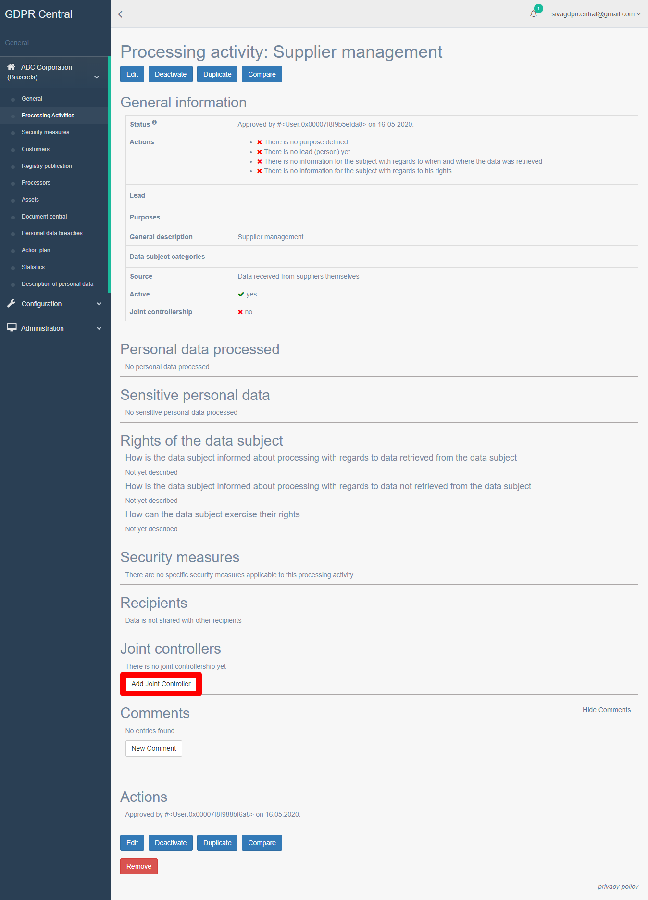

How do I set up joint controllership?¶
A Processing Activity that has been created can be a shared process between your company and another company. In such cases, a joint controllership is created between the two companies within the GDPR Central platform.
You can create a new joint controllership in GDPR Central by performing the following steps:
Login to GDPR Central using your credentials if not already logged in.
Follow the steps to create a new Processing Activity and after clicking Save, the Processing Activity overview screen is displayed. You can also access the Processing Activity overview screen by navigating to Processing Activities under your organization and clicking the View button (
 ) for the Processing Activity that needs joint controllership to be set up.
) for the Processing Activity that needs joint controllership to be set up.Scroll down to Joint Controllers in this page and click Add Joint Controller button.
The New joint controller page appears.
Joint Controller Screen Details¶ Field
Description
Select entity
Select the entity with whom the joint controllership is being set up
Complete entity data button
If the entity is not already created, click this button, and create the new entity with whom the joint controllership is being set up
Location
Select the location of the new entity with whom the joint controllership is being set up.
Appropriate safeguards for international data transfer
Depending on the country where the asset is hosted, appropriate safeguards must be in place, under which data transfer can be allowed. Example EU-US privacy shield. Enter the safeguards in place
Roles and responsibilities documentation
Enter the roles and responsibilities of both the organizations. It is important that the roles and responsibilities are clearly documented to avoid ambiguity
Click Create Joint controller button to set up the joint controllership.
After setting up joint controllership for a process activity with another entity, you will also see the newly added process activity listed under the list of process activities in the newly added entity as well.